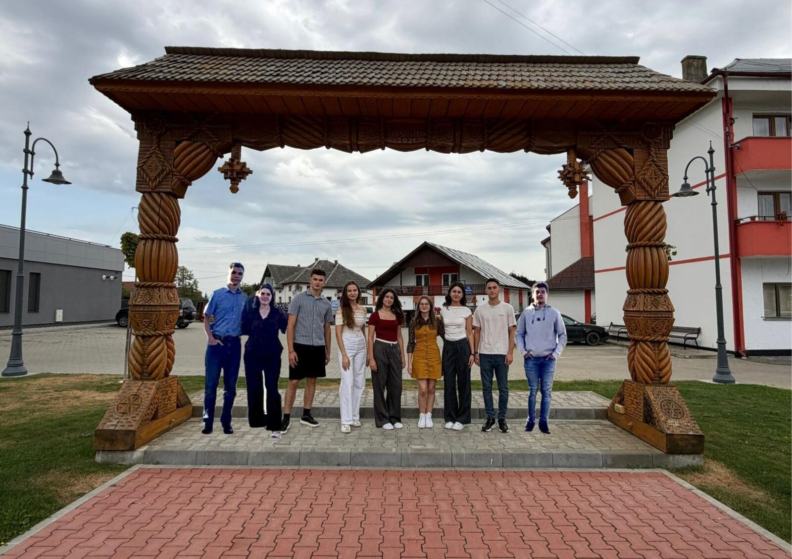

Grup de inițiativă din Fărcașa, Sârbi, Buzești și Tămaia. Finalistă în cursa pentru titlul de Sat European de Tineret 2027 – tinerii ca parteneri activi ai comunității.
Suntem un grup de tineri din comuna Fărcașa, Maramureș – din satele Fărcașa, Sârbi, Buzești și Tămaia. Credem că mediul rural merită mai multe oportunități, mai multă voce și mai multă energie creativă. Suntem finalistă în cursa pentru titlul de Sat European de Tineret 2027 și construim împreună un plan concret de activități pentru anul candidaturii.